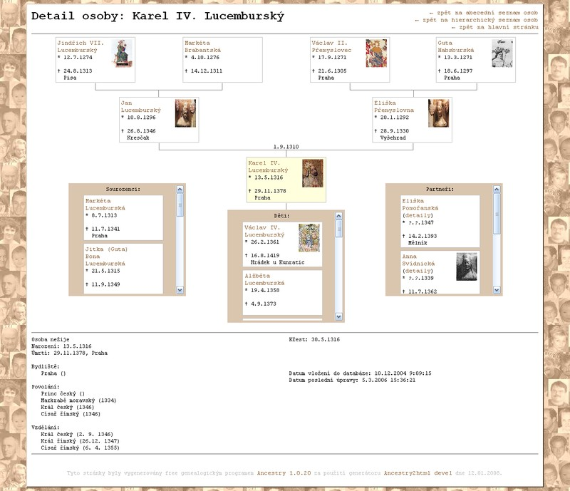
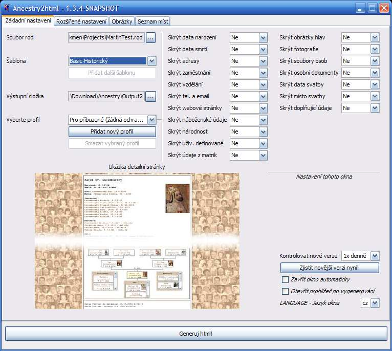

Ancestry2html - instalace a použití programu
Obsah
Základní popis programu
Program slouží k vytváøení html stránek pro zobrazování stromu rodokmenu. Obsahuje 2 pøedpøipravené šablony (z nichž každá z nich má 8 barevných variant). Šablony si mùže uživatel jednoduše doupravit, pøípadnì vytvoøit zcela nové (postaèí pouze znalost html a css). Pùvodní cíl programu byl, aby si každý uživatel mohl šablony upravit a tím vygerované stránky s rodokmenem jednoduše zaèlenit do designu svých stránek.
Praktickou ukázku použití na rodokmenu Karla IV. naleznete zde pøípadnì na obrázku níže.
Jak mùžou vypadat vygenerované stránky pokud si šablony mírnì poupravíte (aby zapadly do vašeho designu stránek) se mùžete podívat na mém vlastním rodokmenu.

Pokud pøi zkoušení programu objevíte nìjaký problém, pøípadnì máte-li nìjaký námìt, co by se vám v programu líbilo, mùžete využít speciální fórum pøímo na stránkách Ancestry. Budu se snažit vaše námìty do programu zakomponovat.
Požadavky
- Vytvoøený rodokmen ve free programu Ancestry.
- Nainstalovaná java - minimálnì JRE 6.0 (pro stažení kliknìte zde a následnì na odkaz "Download" u nadpisu "Java Runtime Environment (JRE) 6 Update #" - kde # je èíslo poslední podverze).
Seznam zmìn
- 31.1.2009: Verze 1.3.3: Seznam fotografií na stránkách partnerství; Hlavní osoba je standardnì "Aktivní" osoba v Ancestry; Doladìno øazení dìtí na stránkách partnerství; Udìláno øazení fotografií podle roku;
Vyøešen problém nastavení hlavní osoby v hierarchickém seznamu osob (který se objevil po verzi 1.3.2); Pøidáno tlaèítko na zjištìní nové verze.
- 20.1.2009: Verze 1.3.2.1: Oprava problému s øazením ? až za Ž. Oprava funkce volení hlavní opsoby, která byla v 1.3.2 poškozena.
- 18.1.2009: Verze 1.3.2: Oprava problému se spodním odsazením fotky osoby v IE 6+7; Oprava špatného levého odsazení bunìk ve stylu TreeView; Odstranìn chybný oddìlovaè tisícù v letopoètech; Osoby s neznámým pøíjmením pøesunuty na konec seznamu osob;
- 04.1.2009: Verze 1.3.1.1: Tøídìní sourozencù nefungovalo v seznamu sourozencù v šablonì Basic (fungovalo pouze ve stromeèku).
Aktualizován slovenský pøeklad html stránek.
- 03.1.2009: Verze 1.3.1: Použití knihovny jQuery; Hledání osob pøidáno i na hierarchický seznam; Øazení dìtí a sourozencù podle data narození + partneøi øazeni hierarchicky; Drobná oprava zobrazování spojnic bunìk
- 29.12.2008: Verze 1.3.0.1: Opraven problém pøi zmìnì výstupní složky a následném naètení nastavení okna.
- 28.12.2008: Verze 1.3.0: Automatické zavírání okna po vygenerování; Automatické otevøení prohlížeèe po vygenerování; Volba jazyka okna; Vylepšení zobrazování progressbaru; Pøíprava pro naèítání rodu v UTF-8; Kontrola nové verze na webu
- 06.12.2008: Verze 1.2.0.9b: Skrytí skrytých osob v cestì od aktuální osoby k hlavní osobì;
Negenerování souborù s detaily partnerství skrytých osob
- 09.11.2008: Verze 1.2.0.9: Ukládání a mazání vlastního profilu soukromí; Zobrazení vztahu mezi hlavní osobou a vybranou osobou na stránce detailù; Uložení nastavení pøímo do výstupní složky a jeho naètení pøi zmìnì výstupní složky.
- 01.11.2008: Mùj rodokmen: Nejedná se pøímo o zmìnu v programu, ale o ukázku jeho použití na mém vlastním rodokmenu a zaèlenìní vygenerovaných stránek do designu mého webu. Úprava šablon spoèívala víceménì pouze ve výmìnì pùvodní hlavièky a patièky.
- 24.8.2008: Verze 1.2.0.8: Ètyønásobné zrychlení generování (problém s logováním vyøešen).
- 3.8.2008: Verze 1.2.0.7 - Oprava lomítek v odkazech na jazykové verze stránek.
- 1.8.2008: Verze 1.2.0.6 - Generování vícejazyèných stránek s možností pøepínání jazykù na stránkách a se sdílenými doplòujícími soubory a fotografiemi pro všechny jazykové verze.
- 27.7.2008: Verze 1.2.0.5 - Zobrazeno upozornìní o použití pøíjmení místo rodných pøíjmení na stránkách. Zobrazení titulù na stránce s detaily (oprava, kdysi už to tam bylo). Možnost skrytí ID, narození a úmrtí v seznamech osob. Možnost zobrazení krátkého popisu v seznamech souborù (napø seznam fotografií)
- 21.6.2008: Verze 1.2.0.4 - Opraven problém pádu verze 1.2.0.3 nastávající pøi prázdném pøíjmení i rodném pøíjmení u osoby a dalších podmínkách. Lokalizace okna procesu (oprava èeských znakù).
- 16.6.2008: Verze 1.2.0.3 - Zobrazování rodného pøíjmení v závorce za aktuálním pøíjmením pøi nenastavené volbì "Zobrazit rodná pøíjmení místo pøíjmení".
- 27.4.2008: Verze 1.2.0.1 - Oprava tøídìní podle abecedy. Možnost výbìru vyhledávaèe pro mapy. Reorganizace a zpøehlednìní okna s nastavením.
- 20.4.2008: Dùležitá oprava hierarchického zobrazení - pokud se døíve stalo, že skryté osoby jakoby rozdìlily celý strom na dvì samostatné nepropojené èásti, pak osoby z jedné z èástí se ocitly mimo hierarchický seznam. S touto zmìnou souvisí i to, že osoby, které jsou skryté se ve výpisech (tøeba ve stromì) objeví, ale nemají vyplnìný žádný údaj. Dále se v seznamech osob zvýrazòuje hlavní osoba - tu je již možno zvolit pøímo v oknì nastavení. Dále je možno v oknì zvolit i použité locale - podle nìj se øídí napøíklad tøídìní osob podle abecedy, èi první písmeno jména (napø. 'ch' se bere v potaz pouze pøi nastaveném locale pro èeštinu)
- 14.4.2008: Podpora více jazykù - èeština, angliètina a slovenština. Skloòování množných èísel - napø: 1 dítì, 2 dìti, 5 dìtí.
- 6.4.2008: Zejména rozšíøena nápovìda. Drobné úpravy: odstranìní pøebyteèných prázdných závorek u míst a povolání; opravena chyba èíslování souborù partnerství (pøi nìkolikanásobném generování); dodìlána možnost nastavit vlastní názvy souborù v konfiguraèním souboru; sjednocení css tøíd a html pro obì šablony (témìø neviditelná, ale pro další vývoj a pøidávání nových funkcí nezbytná zmìna).
- 23.3.2008: Kulaté okraje pro osoby ženského pohlaví ve stromeèku. Opraven problém se zobrazováním fotografií hlav u osob s ID>1000. Odstranìno skrolování sourozencù, partnerù a potomkù na stránce osoby.
- 2.3.2008: Volitelné zobrazování ID. Podpora externì pøipojených obrázkù s hlavami. Zmenšování fotek a obrázkù s hlavami na požadovanou velikost + vytváøení malých náhledù. Oprava problému s vícenásobným zobrazením abecedy v seznamu osob.
- 17.2.2008: Odkazy na seznam fotografií (souborù èi dokumentù) zobrazeny pouze pokud není stránka prázdná. Kontrola formátù data (oprava chyby formátu napø. "15.10.????"). Oprava naèítání identifikátoru osoby. Možnost nastavení skrývání doplòujících textù. Opravena chyba zpùsobující zahlcení programu pøi generování. Drobné zmìny v designu stránek. Možnost pouštìt program pod linuxem (vyøešeny problémy s kódováním textù a lomítky v cestách).
- 10.2.2008: Podpora skupin osob v oknì nastavení. Nejstarší a nejmladší na stránce se statistikou. Vyhledávací formuláø na stránce s abecedním seznamem osob
- 4.2.2008: Opravena chyba se zpìtnými lomítky v url.
- 3.2.2008: Stránka se seznamem fotografií (souborù a osobních dokladù). Zpracovávání dat narození a úmrtí - zobrzení délky života. Zobrazování progress okna pøi generování. Spouštìní aplikace pøes Ancestry2html.exe
- 27.1.2008: Stránka s detaily souboru a osobním dokumentu. Skrývání dat o svatbì. Vylepšena možnost tisku stránek.
- 20.1.2008: Stránka se seznamem míst. Styl treeview vyèištìn pro správné zobrazení IE. Opraven problém se zobrazováním okna pøi nestandardním nastavení DPI v systému.
- 16.1.2008: Možnost skrývání hlav. Pøidáno zobrazování fotografií. Styl basic vyèištìn pro správné zobrazení IE.
- 12.1.2008: Okno pro snadné nastavování generátoru.
- 6.1.2008: Nové styly TreeView (ve všech 8 barvách jako Basic styl). Provedena validace html.
- 31.12.2007: Vyøešen problém s èeštinou v parametrech (napø. cesta k rod souboru) - pøidán parametr chcp 1250 do bat souboru
- 30.12.2007: Možnost zpracovávání parametrù v css souborech - použit soubor Templates.properties pro definování uživatelských promìnných; 2 nové html styly; stránka index s rozcestníkem na seznamy osob, stránka s hierarchickým seznamem osob; nový jednoduchý bat soubor pro všechny styly
- 28.12.2007: Pøidána stránka s detaily partnerství (manželství), zobrazení malého stromu na stránce s detaily v základních pìti šablonách
- 27.12.2007: Zmìna zpùsobu psaní šablon - bohužel nekompatibilní s verzí 1.0. Vyhodil jsem 3/4 programu, který øešil zpracovávání šablon a použil již hotovou super knihovnu pro práci s šablonami - freemarker. Psaní šablon je teï daleko flexibilnìjší a nová funkcionalita programu pùjde pøidávat mnohonásobnì rychleji, jelikož vìtšinu èasu zabralo integrování nových parametrù do èásti zpracovávání šablon. Slibuji, že další zpìtnì nekompatibilní zmìna šablon již 100% nebude)
- 9.12.2007: Podpora rùzných kódovaní pro vstupní a výstupní soubory.
Download
Nejnovìjší verzi stáhnete na http://sirsi.wz.cz
Nápovìda - Obsah instalaèního balíèku
Stažený zip mùžete rozbalit kdekoli, není nutné rozbalovat ho do složky s Ancestry. Pokud ovšem generátor chcete spouštìt pøímo z Ancestry rozblate si jej do složky "TODO". Jednotlivé podsložky obsahují následující soubory:
- bin - spouštìcí soubory pro windows a linux
- doc - obsahuje tuto nápovìdu, dále soubor s popisem parametrù použitelných v konfiguraèních souborech + soubor s popisem promìnných, které jsou k dispozici v jednotlivých šablonách
- etc - konfiguraèní soubory programu (seznam a nastavení profilù soukromí, seznam šablon)
- lang - pøeklady textù použitých v programu
- lib - knihovny (jary) používané programem
- templates - html šablony
- _Basic a _TreeView - dvì základní sady html souborù, na které se odkazují jednotlivé šablony
- CervenyPsaciStroj_Basic, CervenyPsaciStroj_TreeView atd. - složky s šablonami obsahující soubory s nastavením barev a ostatních parametrù programu a dále náhled stylu zobrazovaný v programu
Dále se zde nachází soubor version-cz.txt, ve kterém se mùžete podívat na historii zmìn.
Nápovìda - Spuštìní aplikace
Pro spuštìní programu použijte Ancestry2html.exe ve složce bin (pokud program spouštíte pod windows, na linuxu použijte Ancestry2html.sh). Pokud vše probìhne jak má, objeví se hlavní okno s nastavením programu - víceménì podobné tomu na obrázku. Toto okno je také možno vyvolat pøímo z programu Ancestry.

Nápovìda - Nastavení aplikace
Okno s nastavením obsahuje nìkolik záložek (panelù - oušek). Pøi bìžném generování je vìtšinou nutno mìnit pouze parametry na prvním z nich, ostatní staèí nastavit pøi prvním spuštìní programu.
Základní nastavení
- Jako první je samozøejmì nutné vybrat soubor rod, z kterého se budou brát data pro generování (tento krok není nutný pøi automatickém spouštìní pøímo z Ancestry - soubor je již pøedvyplnìn na aktuálnì otevøený rodokmen).
- Dále si vyberte šablonu. Pøi výbìru šablony se v dolní èásti zobrazí ukázka vzhledu stránky (konkrétnì ukázka stránky s detailem osoby).
- Do budoucna je v plánu možnost stažení dalších šablon samostatnì z internetu, pro toto bude sloužit tlaèítko "Pøidat další šablonu" (pøípadnì také, pokud jste zdatnìjší v html a css a rozhodnete se vytvoøit si vlastní šablonu). Po vybrání složky s novou šablonou se tato pøidá na konec vyskakovacího seznamu šablon.
- Další políèko obsahuje cestu k adresáøi, do kterého chcete stránky vygenerovat (pozor - zatím se existující soubory pøepisují automaticky).
- Dùležitou vlastností je Profil. Ten slouží k hromadnému nastavení dalších prvkù na této záložce. Záleží zda chcete stránky vygenerovat a poté vystavit na webu (a zneviditelnit nìkteré citlivé údaje - viz Zásady ochrany osobních údajù), èi poskytnout na CD tøeba svým pøíbuzným (a nechat všechny údaje pøístupné).
- Po nastavení profilu soukromí si mùžete v pravé èásti panelu zmìnit nastavení pro jednotlivé informace. Na výbìr máte 3 možnosti: buï nezobrazit daný údaj u žádné osoby, nebo u všech, nebo pouze u nežijích osob (u kterých již nejsou nìkteré osobní informace zneužitelné).
- Zmìníte-li nìkteré položky profilu soukromí, mùžete si toto nastevení uložit do vlastního profilu soukromí a pøíštì jednoduše vybrat tento ze seznamu. Aplikace si v opaèném pøípadì nezapamatuje tuto zmìnu (pamatuje si automaticky pouze naposledy zvolený profil, nikoli zmìny v nìm provedené)
- Nevyhovuje-li vám vámi definovaný profil, mùžete jej snadno odstranit tlaèítkem "Smazat vybraný profil".
- Nyní již mùžete kliknou na tlaèítko "Generovat html!". Další nastavení mùžete nechat na výchozích hodnotách.
- Další ovládací prvky na první záložce neslouží pro samotné nastavení html výstupu, ale k nastavení chování samotné aplikace Ancestry2html.
- Automatická kontrola nových verzí programu - lze nastavit zda kontrolovat 1x dennì, 1x týdnì, 1x mìsíènì, nebo nikdy. Program si zjistí èíslo verze nabízené na webu a porovná ho s èíslem verze, kterou používáte a pøípadnì nabídne novou verzi ke stažení. Tuto kontrolu lze provést i manuálnì kdykoli tlaèítkem.
- Zejména pokud program pouštíte pøímo z Ancestry využijete možnost nastavit automatické zavírání okna po vygenerování (a mùžete pokraèovat dále v práci v Ancestry)
- Další možností je volba automatického spuštìní prohlížeèe po vygenerování stránek, kde si tak mùžete rovnou prohlédnout výsledek.
- Poslední volba je možnost zmìny jazyka okna (nemá vliv na vygenerované stránky - to se nastavuje jinde).
Rozšíøené nastavení
- Na druhé záložce máte možnost zvolit, zda zobrazovat u každé osoby identifikátor (kdekoli se osoba vyskytuje na stránkách) pro lepší identifikaci. Toto je vhodné, zejména máte-li vìtší rodokmen s osobami stejného jména i pøíjmení.
- Další volbou je možnost zobrazovat osoby ve formátu "Pøíjmení Jméno" místo standardního "RodnéPøíjmení Jméno" (což je urèitì pøehlednìjší - proto doporuèuji tuto volbu nechat zaškrtnutou)
- Pro úèely zobrazení hierarchického seznamu osob je možno urèit hlavní osobu (pomocí jejího identifikátoru). Generace se poté budou poèítat od této osoby. Nevyplníte-li tuto položku, generátor bude za hlavní osobu považovat aktuálnì/naposledy (v dobì uložení rodu) zobrazenou osobu v Ancestry.
- Další je možnost vygenerování vícejazyèných stránek. V seznamu si mùžete vybrat jeden èi více (s pøidržením Ctrl) jazykù. Stránky jsou poté vygenerovány pro každý z vybraných jazykù (obrázky apod. sdílí všechny jazykové verze stránek spolu). Na každé stránce poté pøibyde pøepínaè na zobrazení v jiném jazyce.
- S pøedchozí volbou souvisí další možnost volby výchozího jazyka. To znamená, který jazyk se má zobrazit pøi zobrazení hlavní stránky (index.html)
- Vynechání nìkterých osob z generování je možné vyplnìním položky "Povolené skupiny" a "Zakázané skupiny". Do obou políèek mùžete vyplnit více názvù skupin oddìlených støedníkem. Nejprve se bere v potaz seznam povolených skupin, poté seznam zakázaných. Uvedete-li jen seznam povolených, osoby nepatøící do žádné z tìchto skupin se nezobrazí (v html bude uvedeno, že data osoby jsou skryta, ale bude vidìt, že nìjaká taková osoba existuje). Uvedete-li jen seznam zakázaných, osoby z tìchto skupin budou skryty (ostatní se zobrazí). Pøi kombinaci obou seznamù se zobrazí všechny patøící do libovolné skupiny z povolených, nepatøící do žádné ze zakázaných skupin.
- Zaškrtávátko "Blokovat i soubory zakázaných" urèuje míru zákazu zakázaných osob. Je-li odškrtnuto, do html se vygenerují i dokumenty (napø. fotografie), které jsou pøiøazeny k blokované osobì (za pøedpokladu, že jsou pøiøazeny alespoò k jedné povolené osobì). V tomto pøípadì je samozøejmì v html vyjmuta blokovaná osoba ze seznamu osob pøiøazených k dokumentu. Je-li zaškrtnuté, staèí aby jedna pøiøazená osoba byla blokována a dokument se vùbec v html neobjeví.
Zásady ochrany osobních údajù
Pokud chcete vygenerované stránky vystavit na webu, nebo i jenom poskytnout na CD svým známým èi pøíbuzným, mìjte na pamìti ochranu soukromých údajù. Vyjádøení odborníka z Úøadu pro ochranu osobních údajù si mùžete pøeèít zde (platnost zákonù k 19.2.2009, dìkuji Ing. Lubomíru Novému za vznesený dotaz a poskytnutí tohoto vyjádøení):
"Zákon è. 101/2000 Sb., o ochranì osobních údajù a o zmìnì nìkterých zákonù, ve znìní pozdìjších pøedpisù (dále jen „zákon o ochranì osobních údajù„), se podle ustanovení § 3 odst. 3 nevztahuje na zpracování osobních údajù, které provádí fyzická osoba výluènì pro osobní potøebu. Zveøejòování rodokmenu na internetu už mùže být posouzeno jako pøekroèení podmínek pro tuto výjimku. Osoba, která takto zpracovává osobní údaje v datovém souboru, kterým rodokmen zveøejòovaný na internetu za úèelem jeho doplòování o další údaje je, se tak dostává do postavení správce osobních údajù se všemi povinnostmi ze zákona o ochranì osobních údajù vyplývajícími.
Povinnost získat souhlas subjektu údajù je zákonem o ochranì osobních údajù vztažena toliko k žijícím osobám, nikoli k blízkým osobám osob zemøelých. Uvedení osobních údajù zemøelých osob ve zveøejòovaném rodokmenu bez souhlasu blízkých osob zemøelých proto není porušením zákona o ochranì osobních údajù. Blízkým osobám zemøelých však pøísluší uplatòovat právo na ochranu jejich osobnosti podle § 15 obèanského zákoníku.
Pokud jde o údaje o žijících osobách, je k jejich zveøejòování v rodokmenu tøeba získat jejich souhlas. I údaje v rozsahu: jméno, pøíjmení, jsou údaji o urèeném a urèitelném subjektu údajù, které vzhledem k rodinným vazbám v rodokmenu uvádìným, mohou být v nìkterých pøípadech posouzeny i jako citlivé údaje ve smyslu § 4 písm. b) zákona o ochranì osobních údajù, vypovídající o národnostním nebo etnickém pùvodu subjektu údajù, zejména pokud jde o národnostní nebo etnické menšiny. Neoprávnìné zveøejòování osobních údajù v rozporu s èlánkem 10 Listiny základních práv a svobod mùže být pøedmìtem žaloby na ochranu osobnosti podle obèanského zákoníku."
Nápovìda - nastavení pøístupná pøes konfiguraèní soubory
Každá grafická šablona obsahuje 2 konfiguraèní soubory: jeden pojmenovaný Template.properties obsahuje nastavení barev písma, pozadí a podobnì.
Druhý soubor se jmenuje JMENO_Ancestry2html.properties (napø. Basic_Ancestry2html.properties) a obsahuje mnoho voleb pro generování, z nichž nìkteré lze pøenastavit pøímo v grafickém oknì.
Zde je výèet vlastností (šedé vlastnosti nenastavujte, pokud používáte klikací okno, budou ignorovány), zmìna nìkterých parametrù mùže zpùsobit nefunkènost programu - mìòte pouze pokud víte co dìláte :-) ).
Základní vlastnosti:
- propertiesEncoding=UTF-8
kódování použité v konfiguraèních souborech (vèetnì tohoto) (necháte-li prázdné, použije se standardní systémové kódování)
- file=
cesta k rod souboru, který chcete použít ke generování
- templatesDir=../_Basic
relativní cesta k html souborùm šablony (není-li uvedeno, použije se složka, ve které je tento konfiguraèní soubor)
- inputImgDir=img
relativní cesta ke složce s obrázky (není-li uvedeno, použije se podsložka "img" složky s html šablonami)
- inputCssDir=
relativní cesta ke složce s css styly (není-li uvedeno, použije se podsložka "css" složky s html šablonami)
- templateEncoding=UTF-8
kódování souborù šablon (necháte-li prázdné, použije se standardní systémové kódování)
- templatePropertiesFile=Template.properties
relativní cesta k souboru s nastavením grafických parametrù stylu (barvièky, fonty a tak)
- outputDir=
výstupní složka pro generované soubory
- outputImgDir=
výstupní složka pro obrázky (není-li uvedeno, použije se podsložka "img" výstupní složky)
- outputCssDir=
výstupní složka pro css styly (není-li uvedeno, použije se podsložka "css" výstupní složky)
- outputEncoding=UTF-8
kódování výstupních html souborù (necháte-li prázdné, použije se standardní systémové kódování)
Názvy výstupních souborù (pøi zmìnì již existujících šablon je nutno dodržet stejné zanoøení souborù v podadresáøích jako bylo pùvodnì - tzn. je-li personalFileName=person/person${id}.htm, nelze zmìnit na personalFileName=osoba${id}.htm ale tøeba personalFileName=nìjakáSložka/osoba${id}.htm - tzn. musí být v jedné podsložce. Je to kvùli relativním odkazùm na css a img soubory a na ostatní html soubory):
- indexFileName=index.htm
Název startovní stránky
- personalFileName=person/person${id}.htm
Název souborù s detaily osoby (musí obsahovat ${id} - bude nahrazeno za konkrétní id osoby)
- partnershipFileName=partnership/partnership${id}.htm
Název souborù s detaily partnerství (musí obsahovat ${id} - bude nahrazeno za konkrétní id partnerství)
- listFileName=lists/list.htm
Název souboru se seznamem osob
- listHierarchyFileName=lists/listHierarchy.htm
Název souboru s hierarchickým seznamem osob
- documentFileName=documents/document${id}.htm
Název souboru s detaily o dokumentu (musí obsahovat ${id} - bude nahrazeno za konkrétní id dokumentu)
- documentsFileName=lists/documents.htm
Název souboru se seznamem dokumentù
- credentialFileName=credentials/credential${id}.htm
Název souboru s detaily osobního dokumentu (musí obsahovat ${id} - bude nahrazeno za konkrétní id dokumentu)
- credentialsFileName=lists/credentials.htm
Název souboru se seznamem osobních dokumentù
- photoFileName=photos/photo${id}.htm
Název souboru s detaily fotografie (musí obsahovat ${id} - bude nahrazeno za konkrétní id fotografie)
- photosFileName=lists/photos.htm
Název souboru se seznamem fotografií
- statisticsFileName=lists/statistics.htm
Název souboru se statistikou
- placesListFileName=lists/places.htm
Název souboru se seznamem míst
Nastavení soukromí:
- hideBirthData=no
skrýt data narození (datum a místo) osoby. Možné hodnoty: no (nikdy)/live (pro žijící osoby)/all (vždy)
- hideDeathData=no
skrýt data úmrtí (datum a místo) osoby. Možné hodnoty: no (nikdy)/all (vždy)
- hideLivePlaces=no
skrýt bydlištì osoby. Možné hodnoty: no (nikdy)/live (pro žijící osoby)/all (vždy)
- hideJobs=no
skrýt povolání osoby. Možné hodnoty: no (nikdy)/live (pro žijící osoby)/all (vždy)
- hideEducation=no
skrýt vzdìlání osoby. Možné hodnoty: no (nikdy)/live (pro žijící osoby)/all (vždy)
- hideContact=no
skrýt emaily a telefony. Možné hodnoty: no (nikdy)/all (vždy)
- hideWeb=no
skrýt webové adresy. Možné hodnoty: no (nikdy)/all (vždy)
- hideReligion=no
skrýt všechny náboženké údaje. Možné hodnoty: no (nikdy)/live (pro žijící osoby)/all (vždy)
- hideNationality=all
skrýt národnost a státní pøíslušnost. Možné hodnoty: no (nikdy)/live (pro žijící osoby)/all (vždy)
- hideUserDefined=no
skrýt uživatelsky definované položky. Možné hodnoty: no (nikdy)/live (pro žijící osoby)/all (vždy)
- hideRegistryInfo=no
skrýt informace o matrikách. Možné hodnoty: no (nikdy)/live (pro žijící osoby)/all (vždy)
- hideHeads=no
skrýt obrázky hlav. Možné hodnoty: no (nikdy)/live (pro žijící osoby)/all (vždy)
- hidePhotos=no
skrýt fotografie. Možné hodnoty: no (nikdy)/live (pro žijící osoby)/all (vždy)
Ostatní parametry:
- birthDeathSplitter=,
oddìlovaè mezi datem a místem (použito pro vlastnosti 'birth' a 'death')
- fromToSplitter= –
oddìlovaè mezi od a do (použito pro vlastnost 'fromTo' u bydlištì, zamìstnání, vzdìlání ...)
- toPrefix=do
oddìlovaè mezi od a do pokud datum od není vyplnìn (použito pro vlastnost 'fromTo' u bydlištì, zamìstnání, vzdìlání ...)
- groupsOnly=
filtr osob; pouze osoby náležející do tìchto skupin budou zobrazeny (jména oddìlená støedníkem). V pøípadì, že je prázdné, zobrazí všechny osoby.
- groupsHide=
filtr osob; osoby náležející do tìchto skupin budou skryty (jména oddìlená støedníkem). Standardnì prázdné
- locale=cs_CZ
jaké locale použít (použito napø. pro tøídìní osob v seznamu). V pøípadì, že není uvedeno, použije se systémové locale. Pøíklady: cs_CZ, en_GB, en_US
- mainPersonId=0
èíslo hlavní osoby - použito v hierarchickém seznamu pro urèení hlavní osoby
- addressSplitter=,
oddìlovaè použitý v adresách osob (napø. "Dlouhá 28, Hradec Králové, 500 02, Èeská republika" - oddìlovaè je èárka)
- townInAddressPosition=2
pozice mìsta (obce) v adrese bydlištì (napø. "Dlouhá 28, Hradec Králové, 500 02, Èeská republika" - pozice obce je 2)
- townInBirthPosition=1
pozice mìsta (obce) v záznamech: místo narození, místo úmrtí a místo pohøbení (napø. "Hradec Králové, porodnice" - pozice obce je 1)
- useMaidenName=true
zobrazit "rodné pøíjmení" a "køestní jméno" pro tag "name". Je-li false pak zobrazí "poslední pøíjmení" a "køestní jméno"
- maxSizePhoto=800x600
maximální velikost fotografií (vìtší fotografie budou zmenšeny); pokud chcete omezit jen jeden rozmìr, použijte místo druhého pomlèku (napø.: "-x600")
- maxSizeMiniPhoto=-x150
maximální velikost malého náhledu fotografie
- maxSizeHead=150x200
maximální velikost obrázku hlavy
- maxSizeMiniHead=28x37
maximální velikost obrázku hlavy použitého ve stromovém zobrazení
{kind=link}